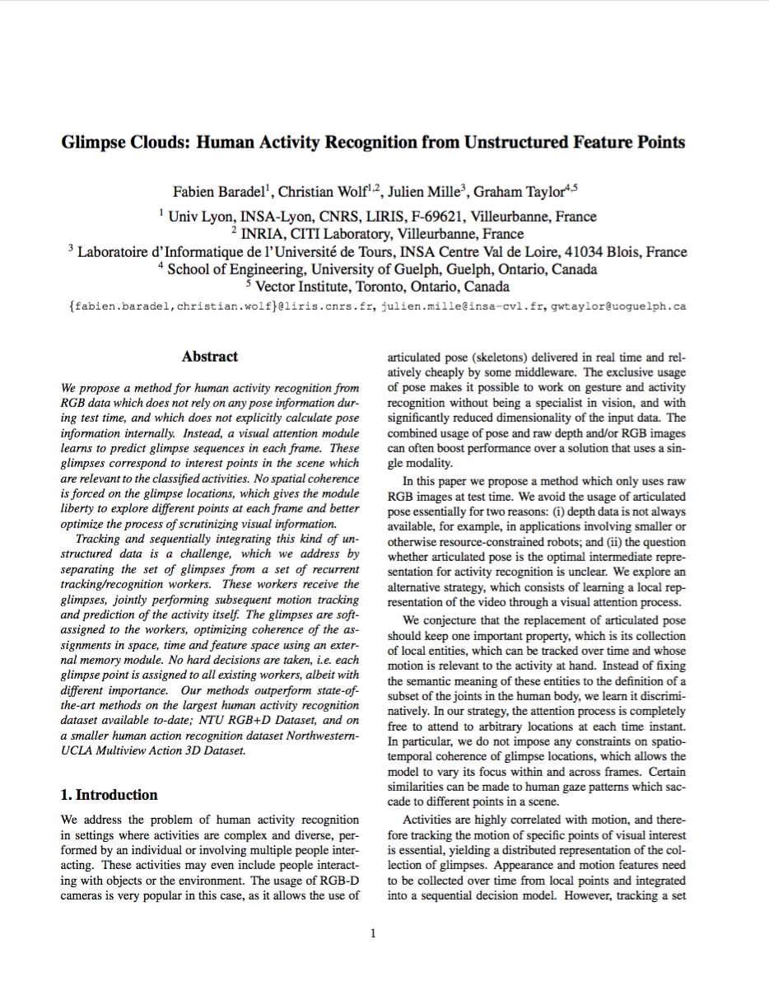

Glimpse Clouds:
Human Activity Recognition
from Unstructured Feature Points

Fabien Baradel
INSA Lyon

Christian Wolf
INRIA - INSA Lyon

Julien Mille
INSA Centre Val de Loire
Graham Taylor
University of Guelph - Vector Institue

arXiv:1802.07898
Interview on CVPR Daily / Code
Abstract
We propose a method for human activity recognition from RGB data which does not rely on any pose information during test time, and which does not explicitly calculate pose information internally. Instead, a visual attention module learns to predict glimpse sequences in each frame. These glimpses correspond to interest points in the scene which are relevant to the classified activities. No spatial coherence is forced on the glimpse locations, which gives the module liberty to explore different points at each frame and better optimize the process of scrutinizing visual information. Tracking and sequentially integrating this kind of unstructured data is a challenge, which we address by separating the set of glimpses from a set of recurrent tracking/recognition workers. These workers receive the glimpses, jointly performing subsequent motion tracking and prediction of the activity itself. The glimpses are soft-assigned to the workers, optimizing coherence of the assignments in space, time and feature space using an external memory module. No hard decisions are taken, i.e. each glimpse point is assigned to all existing workers, albeit with different importance. Our methods outperform state-of-the-art methods on the largest human activity recognition dataset available to-date; NTU RGB+D Dataset, and on a smaller human action recognition dataset Northwestern-UCLA Multiview Action 3D Dataset.